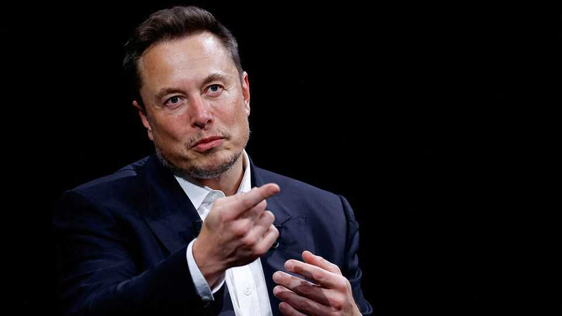
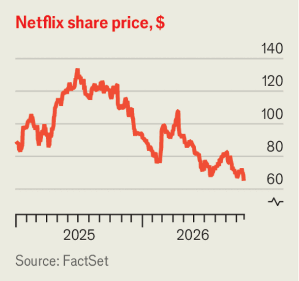

Business
The world this week

Oct 22nd 2026
Elon Musk floated the possibility of merging SpaceX and Tesla. There is a “lot of merit” in combining the companies, he said, and the boards of both have created independent committees to explore their options (as the boss and largest shareholder in both firms Mr Musk is not on the committees). A merger would bring together Mr Musk’s AI ambitions for data centres, driverless cars and robots. SpaceX, meanwhile, reported quarterly revenue of $14.6bn, up by 161% year on year, $7.6bn of which came from AI (which it calls SI, or super intelligence). Mr Musk has pledged to give every child in America one SpaceX share, currently worth nearly $160, next year.
Tesla earlier demonstrated its new Roadster sports car; the demonstration vehicle was modified with SpaceX-derived thrusters and able to flip mid-air and land safely again. The electric-carmaker reported a surprise positive cashflow in its latest earnings.
Market jitters resurfaced about the huge investments being made in AI. CoreWeave, which rents out data-centre capacity, saw its bonds and share price plunge amid worries that it will not be able to service its debt. The sell-off spread to other “neocloud” companies. Meanwhile, the share price of Elice, an AI-infrastructure company, fell by 32% on its first day of trading in South Korea.
Anthropic registered a net loss of more than $80bn in the first half of this year, according to press reports, mostly because of an accounting charge related to bonds that could be eventually converted to shares. The frontier-AI firm is expected to make its stock-market debut in mid-November. Anthropic is to hand over 5% of its shares to a new public-benefit fund it has created to work in AI safety and examine AI’s impact on the jobs market, among other things.
Meta’s third-quarter revenue grew by 26%, year on year, to $64.6bn. The company rolled out its Muse personal AI agent in September. Meanwhile, a court in New Mexico ordered Meta to pay $25bn to the state after it was found to have misled users about privacy.
Barclays, a big British bank, revealed that it is cutting 5,000 jobs this year because of efficiencies from adopting AI. Most of the jobs will be among developers and other support services.

Stock in Netflix slid again after the streaming giant reported its slowest sales growth in three years. Revenue grew by 11.8% in the third quarter, year on year, to $12.9bn. It expects even lower growth of 11.5% in the fourth quarter. Media reports of the company’s woes as it struggles with slowing subscriptions read like a Hollywood movie plot, with both the head of film and the head of content summarily dismissed from their positions and the announcement of 1,000 job cuts. Despite massively increasing its spending on content, Netflix is no longer producing a string of hits.
GDP expanded in China by 4.5% during the third quarter, year on year, an improvement on the 4.3% recorded in the second quarter. China’s exports boom is offsetting weak domestic demand.
The riots in France helped push the yield on French ten-year government bonds above 5% for the first time since 2002, as investors bet that budgetary reforms would be delayed. Carrefour, a big supermarket chain, cut its annual profit forecast and blamed the violence, which it thinks will deter shoppers. Insurance losses from the weekend’s unrest are expected to reach €1bn ($1.1bn), exceeding the €700m in losses incurred over a week of rioting in 2023.
The developers of the PHP programming language issued a fix that they urged users to download immediately, after an OpenAI-led consortium discovered two critical vulnerabilities. PHP shores up a large part of the internet, running in the background of websites, hosting platforms and control panels. Some governments, including in Finland and the Netherlands, took some websites offline while they worked on the issue. America’s National Security Agency recommended that systems be taken offline if users couldn’t apply the mitigations. The fix will have alerted criminals to the vulnerability of servers.
Britain’s annual inflation rate jumped to 3.5% in September. Markets are now all but certain that the Bank of England will raise interest rates at its meeting in November.
The British government at last approved the development of the Jackdaw gasfield in the North Sea, the first big endorsement of a fossil-fuel project under Andy Burnham as prime minister. The governing Labour Party has pledged to deliver a net-zero carbon emissions policy. Greens are furious, but Mr Burnham said it would protect jobs. Unions hailed the decision. The government is now under pressure to approve the Rosebank oil project, which environmentalists also vehemently oppose.
UniCredit, Italy’s second-largest bank, won approval from the European Central Bank to take over Commerzbank, a big German lender. Having secured 48% of Commerzbank’s shares, UniCredit thinks it will take control of the bank by the end of the year.
The IPO of Jio Platforms, Mukesh Ambani’s telecoms firm, was fully subscribed just two hours after it opened. The flotation is expected to raise $3.2bn, making it India’s biggest-ever listing. The shares start trading on October 28th.